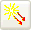

Use a Solar Heating Space  simulation object to model heating of objects on the surface of a planet due to sun incidence. This command calculates direct solar view factors for selected elements at a fixed sun position or at calculation points along the sun's trajectory. Solar view factors are the direct view of an element to the solar source, which is treated as a distant point source. You can model multiple solar sources to simulate multi-directional heating of elements in a multi-star system.
Solar Heating Space is useful, for example, for modeling the thermal effects of the sun on exterior equipment, buildings, and installations.
To define a Solar Heating Space simulation object:
Define a Thermo-Optical Properties – Advanced modeling object with a value for Absorptivity under the Solar Properties group, for all elements included in the Solar Heating simulation object.
|
Note |
To specify a value for Absorptivity under the Solar Properties group, you must select the Define Solar Properties (radiative source spectrum) check box in the Thermo-Optical Properties – Advanced dialog box. |
Create a Radiation simulation object that includes all affected elements to account for the radiative heat that is diffusely reflected to and from the elements.
The options on the Model Orientation tab of the Solar Heating Space dialog box let you position the model in relation to the sun to determine how the sun strikes it. The options available in this tab depend on the method you select from the Orientation Method list. Some examples inlcude:
Latitude — The options in the Planet Vectors and Solar Vectors group let you define two vectors to orient the model in relation to the Earth or selected planet. These two vectors cannot be parallel to each other. Often, they are perpendicular to each other.
Sun Planet Vectors — You can use Specify Field to specify a series of time varying vectors to model the position of the sun with respect to the global coordinate system by specifying point sets in Cartesian or Spherical coordinates.
You define a Radiative Heating simulation object to model the radiative thermal effects of heat sources such as electrical heater elements, engine and exhaust systems, lasers, or any object in the model that emits significant and known quantities of radiative energy.
Create a Radiative Heating simulation object to define selected elements in your model as diffusely or collimated radiating heat sources. The software then calculates the direct heat flux view factors to other elements per heat source that you define.
With Radiative Heating:
You can define the energy to radiate in solar, infrared, or any other spectral distribution.
You can define a spectral distribution of the energy by specifying the Source Temperature of the emitting surfaces or by specifying intensity, expressed as a fraction of the entire energy emitted, as a function of wavelength.
Diffuse reflection and absorption of the incident radiative energy throughout the enclosure is automatically computed, provided that you also create a Radiation simulation object.
Ray tracing is used for specular or transmissive surfaces.
Heat flux view factors are calculated from the radiative source elements to the elements of the illuminated objects. If any of the illuminated elements have specular or diffuse properties, rays will be traced from those elements. Diffuse reflections are also computed from the illuminated elements, provided you also create an Enclosure Radiation type of Radiation simulation object.
For loads applied to 2D or 1D geometry, you can specify how the load varies spatially over the area of the 2D geometry or length of the 1D geometry.